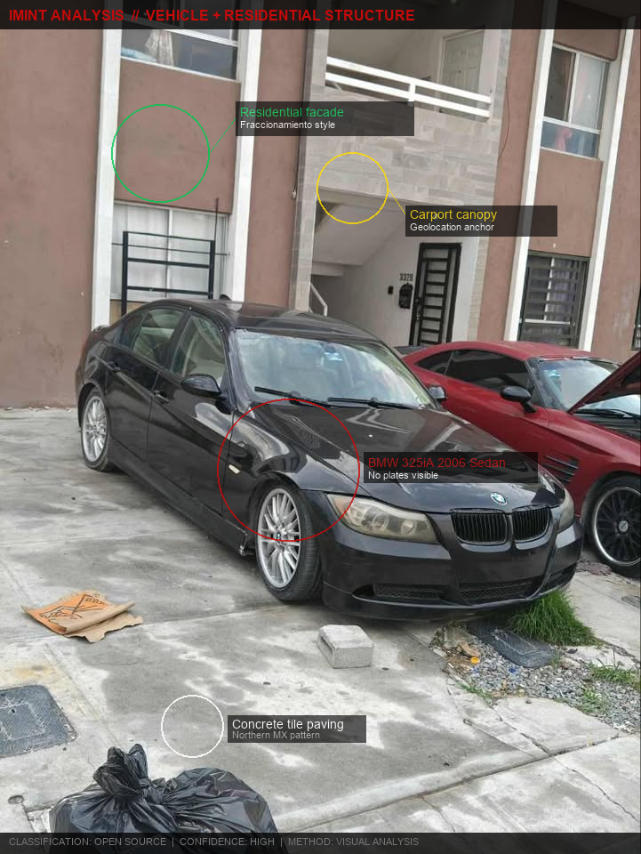
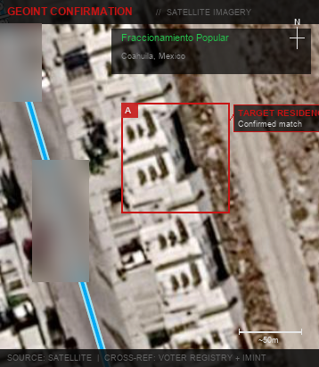

Full-Spectrum OSINT: From Username to Physical Address
Most OSINT practitioners stop at social media accounts and breached credentials. That's the first 15 minutes. The real intelligence value starts when you correlate digital footprints against government records, leaked databases, and physical-world indicators to build a complete profile that includes family networks, vehicle registrations, and confirmed physical addresses.
This article walks through a real investigation where the username ElMissu was
escalated to a complete intelligence profile including family tree, multiple physical locations,
vehicle identification, and IMINT-confirmed geolocation — using a custom OSINT platform
I built specifically for the Mexican digital ecosystem.
The investigation described here was conducted under authorized scope. Certain details have been partially redacted.
Phase 1: Building the Enumeration Engine
Commercial OSINT platforms like OSINT Industries work well for US/EU targets, but their coverage of Mexican services is almost nonexistent. Latin American social networks, government portals, and regional platforms aren't indexed by any commercial tool. So I built my own.
The architecture takes holehe and GHunt as conceptual baselines — both enumerate service registrations by exploiting password reset, login, and registration API responses that leak whether an account exists. I extended this approach to 40+ Mexican and Latin American services.
API Reverse Engineering via Burp Suite
For web applications, the process is straightforward: intercept the authentication flow with Burp Suite, identify the API endpoint that handles login or password reset, and analyze the response differential between existing and non-existing accounts.
# Account exists — API leaks confirmation
POST /api/v1/auth/recover
→ 200 {"status": "recovery_sent", "hint": "m***@gmail.com"}
# Account does not exist
POST /api/v1/auth/recover
→ 404 {"error": "user_not_found"}
# Some services also leak partial email/phone in the response
# This is an enumeration vector + partial PII disclosureMany services return different HTTP status codes, different JSON structures, or even different response times for existing vs non-existing accounts. The enumeration engine catalogs these differentials and automates the check across all indexed services for any given email, phone number, or username.
SSL Pinning Bypass for Mobile APIs
The interesting targets are mobile-only applications. Many Mexican services have well-protected web APIs but ship mobile apps with unprotected API endpoints that expose far more data than the web version. The problem is that modern Android apps implement SSL certificate pinning, which prevents Burp Suite from intercepting HTTPS traffic.
I use Android Studio with a rooted emulator and Frida to bypass SSL pinning at runtime. Once pinning is defeated, the full API surface of the mobile app is visible in Burp:
Java.perform(function() {
var TrustManager = Java.registerClass({
name: 'com.custom.TrustAllCerts',
implements: [Java.use('javax.net.ssl.X509TrustManager')],
methods: {
checkClientTrusted: function(chain, authType) {},
checkServerTrusted: function(chain, authType) {},
getAcceptedIssuers: function() { return []; }
}
});
var SSLContext = Java.use('javax.net.ssl.SSLContext');
var ctx = SSLContext.getInstance('TLS');
ctx.init(null, [TrustManager.$new()], null);
// All HTTPS traffic now flows through Burp
// Mobile API endpoints are fully visible
});Through this process I discovered that several Mexican services expose endpoints that return full profile data (name, registration date, linked accounts) given just a phone number or email — information that's completely hidden in the web interface. These become high-value enumeration sources.
Running the username ElMissu and associated identifiers through the enumeration
engine produced hits across 25+ services:
[enum] Target: ElMissu / +52 844 ███ ████ / missael*****@gmail.com
[+] Telegram t.me/ElMissu ID: 5822406739
[+] Instagram srmissu_ (public profile)
[+] TikTok @elmissu since 2019-02-15
[+] TikTok @mistermissu (alt account)
[+] Reddit u/ElMissu since 2019-10-21
[+] Snapchat @elmissu
[+] Steam 76561198828244399 "jonathan M████ H████ M████"
[+] Chess.com ElMissu "Cu████ H████ Jonathan m████"
[+] Duolingo ElMissu since 2019
[+] YouTube UC0hMS... created 2024-08-14
[+] Twitch elmissu
[+] Pinterest elmissu
[+] osu! 14236816
[+] Apex Legends ElMissu (Origin)
[+] R6 Siege ElMissu (PSN)
# Phone number enumeration:
[+] Life360 [+] CallApp [+] TrueCaller [+] Deezer
[+] Spotify [+] Disney+ [+] Amazon [+] EA [+] Ubisoft
[+] ESPN [+] Nvidia [+] Pokemon.com [+] Unity
# Key finding: Steam and Chess.com leaked fragments of real name
# Cross-referencing fragments → full name confirmed via CURP lookupPhase 2: Stealer Log Intelligence
Stealer logs are the most underutilized intelligence source in OSINT. Infostealers like RedLine, Raccoon, and Vidar harvest saved credentials, cookies, autofill data, and system information from compromised machines. This data ends up in Telegram channels and underground forums, often indexed by email or domain.
I built an automated pipeline that continuously scrapes stealer log dumps from Telegram groups, parses the structured data, and indexes it into a PostgreSQL database on my AWS infrastructure:
class StealerLogParser:
def parse_entry(self, raw_log):
# Standard stealer log format:
# URL | Username/Email | Password | IP | Timestamp
return {
"url": self.extract_url(raw_log),
"email": self.extract_credential(raw_log),
"password": self.extract_password(raw_log),
"ip": self.extract_ip(raw_log),
"hwid": self.extract_hwid(raw_log),
"timestamp": self.extract_date(raw_log),
}
class TelegramScraper:
def monitor_channels(self):
# Continuous monitoring of 50+ stealer log channels
# New dumps are parsed and indexed within minutes
for msg in self.client.iter_messages(channel):
if self.is_log_dump(msg):
entries = self.parser.parse_bulk(msg.file)
self.db.bulk_insert(entries)The AI agent connects to this database and cross-references any discovered email or username against the indexed logs. A single email match can yield:
- IP addresses — from the infected machine, often a residential IP that geolocates to a city or neighborhood
- Saved credentials — revealing other services the target uses, often with reused passwords that confirm account ownership
- Autofill data — sometimes includes full names, phone numbers, and physical addresses from form autofill
- Hardware IDs — unique machine fingerprints that can link multiple accounts to the same physical device
In this investigation, querying missael*****@gmail.com against the stealer log
database returned hits with the residential IP 189.218.██.██, which geolocated
to Ramos Arizpe, Coahuila — narrowing the government record search
from 32 states to a single municipality. The same IP also appeared associated with two other
email addresses (kariina_****@hotmail.com, r****ipn@gmail.com),
suggesting shared household internet — likely family members on the same network.
Phase 3: Government Record Correlation
Mexico's identity system revolves around two interconnected identifiers: the CURP (Clave Única de Registro de Población) and the RFC (Registro Federal de Contribuyentes). The critical insight is that the first 10 characters of both are identical for any given person — they encode the same name and birthdate.
CURP (18 chars): CU██03████HCL████3
RFC (13 chars): CU██03██████6
^^^^^^^^^^
First 10 chars are IDENTICAL
= surname initials + birthdate
CURP encodes: [paterno][materno][nombre][nombre2]
+ birthdate + gender + birth_state + consonants + check
Given an RFC from financial records:
→ Extract first 10 characters
→ Search voter registration database for matching CURP prefix
→ Confirmed identity link with zero ambiguityOnce the CURP is confirmed, the voter registration record provides the registered address, birth
state, and electoral section. The electoral section (sección) is particularly
valuable — it maps to a specific geographic area of a few city blocks. Two people sharing
the same section number are confirmed neighbors.
Family Network Reconstruction
Mexican naming conventions make family mapping deterministic. Children carry their father's
first surname (paterno) as their own paterno, and their mother's first surname
as their materno. This means:
- Search
SURNAME_Aas paterno → finds the subject + siblings + father's relatives - Search
SURNAME_Aas materno → finds children of women from that family who married out - Search
SURNAME_B(mother's line) as paterno → finds maternal uncle's families - Cross-reference addresses → confirms which family members live together
In this investigation, starting from the confirmed name, I reconstructed a three-generation family tree spanning two cities (Monclova and Saltillo) — parents, four siblings, extended family — with confirmed addresses for each household.
# INE database search — target surname as paterno in Coahuila
$ findstr /I "CU████R" "D:\Bases de Datos Mexico\COA\COA.csv"
→ 47 results in Coahuila state
→ 6 share the same electoral section (confirmed family cluster)
# Cross-reference: address search for household composition
$ findstr /I "GARZAS.*325" "D:\Bases de Datos Mexico\COA\COA.csv"
→ 4 residents at AV LAS ██████ 325, COL EL ██████
→ 3 share paterno (siblings: J.D. b.1992, A.J. b.1994, D. b.1997)
→ Target inferred as youngest son (b.2003)
# Extended family — materno as paterno (maternal line)
$ findstr /I "HE██████Z.*CU████R" "COA.csv"
→ Father: V██████ b.19██ CURP: CU██████HCLL████
→ Mother: MA. T██████ b.19██ CURP: HE██████MCLL████
# Second household discovered in Saltillo via LUNA-CU████R branch
→ C ██████ ███, FRACC ██████, CP █████, SALTILLO
→ 5 residents — grandfather, aunt, uncle, 2 cousinsPhase 4: Social Media Deep Dive
Standard OSINT tools find social media accounts. The next level is extracting every post, comment, and interaction from those accounts — including content the user considers buried in their history.
I built a search engine that leverages Facebook's own API endpoints embedded in URL parameters to query any public profile's complete post history. Unlike Facebook's native search (which is deliberately limited), this approach can surface posts from years ago using keyword filters:
# Enumeration found Facebook: facebook.com/missa.██████████/
# Marketplace profile also exposed: /marketplace/profile/100024676██████/
# Deep search: vehicle-related content across full post history
query: "carro" OR "BMW" OR "mustang" OR "mecánico" OR "vendo"
→ Post: asking about BMW 325iA 2006 transmission issues
→ Marketplace: listing parts for Ford Mustang V6 S197
→ Photo: BMW parked in front of residential building
# Two vehicles confirmed:
# 1. BMW 325iA 2006 Sedan — no plates visible
# 2. Ford Mustang V6 S197 (2005-2009)
# The BMW photo contained a residential building → IMINT pivotThe target had posted about mechanical issues with a BMW 325iA, listed Mustang parts on Facebook Marketplace (which exposes the seller's profile even on "anonymous" listings), and uploaded a photo of the BMW that incidentally showed a residential building behind the vehicle. That photo became the key to physical confirmation.
Phase 5: IMINT — Geolocating a House from a Car Photo
The target posted a photo of their BMW parked in front of a residential building. The car was the subject, but the background contained enough architectural and geographic detail to pinpoint the exact location.

Source photograph with IMINT annotations — four geolocation anchors identified
The methodology:
- Architectural analysis — the building style (concrete block, striped carport canopy, specific window pattern) is consistent with fraccionamientos populares common in Coahuila's urban sprawl. The concrete tile paving pattern is a northern Mexico regional indicator.
- Known city from prior intelligence — stealer log IP + voter registration had already confirmed Ramos Arizpe / Monclova area. This narrowed from "anywhere in Mexico" to a specific municipality.
- Overpass Turbo query — using OpenStreetMap data to identify residential developments matching the architectural pattern in the target area:
// Overpass Turbo — fraccionamientos in target municipality
[out:json][timeout:60];
(
way["landuse"="residential"]
(25.50,-101.10,25.60,-100.90);
way["building"="apartments"]
(25.50,-101.10,25.60,-100.90);
);
out body;
>;
out skel qt;Google Earth satellite imagery confirmed the match — the building facade, carport layout, and surrounding structures aligned with the source photo:

Satellite imagery confirmation — target residence cross-referenced against voter registry address
The satellite view confirmed the residential development type, street layout, and building positioning. This converted a social media car photo into a confirmed physical address, independently validating the voter registration data from Phase 3.
The Complete Pipeline
From seed data (a single username) to a complete intelligence profile, the investigation followed this correlation chain:
ElMissu (seed username)
│
├── Enumeration Engine → 25+ services confirmed
│ ├── missael*****@gmail.com, elm████@hotmail.com
│ ├── +52 844 ███ ████
│ ├── Steam/Chess.com leaked name fragments
│ └── 15+ social accounts (TG, IG, TikTok, Reddit...)
│
├── Stealer Log Correlation → IP + linked emails
│ ├── IP 189.218.██.██ → Ramos Arizpe, Coahuila
│ ├── 3 emails on same IP (household members)
│ └── Saved credentials confirming account ownership
│
├── Government Records → CURP / RFC / INE
│ ├── CURP: CU██03████HCL████3 (DOB confirmed)
│ ├── Address: AV LAS ██████ ███, COL EL ██████
│ ├── Parents: V██████ (b.19██) + MA. T██████ (b.19██)
│ └── Family tree: 3 generations, 2 cities, 3 households
│
├── Social Media Deep Dive → vehicles + photos
│ ├── BMW 325iA 2006 Sedan (no plates)
│ ├── Ford Mustang V6 S197 (marketplace)
│ └── BMW photo with residential building → IMINT pivot
│
└── IMINT Confirmation → address validated
├── Fraccionamiento architecture → northern Coahuila
├── Overpass Turbo → candidate developments
└── Google Earth satellite → exact building confirmedThe final product was a complete intelligence profile: full legal identity with CURP/RFC,
family network across three households in two cities, two vehicles identified, 25+ online
accounts enumerated, confirmed physical address cross-validated via voter registry + satellite
imagery, and a digital footprint spanning from 2019 to present across gaming, social media,
and messaging platforms — all from the seed input ElMissu.
Intelligence Summary
Final compiled intelligence product from seed input ElMissu:
━━━━━━━━━━━━━━━━━━━━━━━━━━━━━━━━━━━━━━━━━━━━━━━━━━━━━━━━━━━
IDENTITY
━━━━━━━━━━━━━━━━━━━━━━━━━━━━━━━━━━━━━━━━━━━━━━━━━━━━━━━━━━━
Full Name: J██████ M██████ Cu████ He██████
Aliases: ElMissu / srmissu_ / Missaken
DOB: 200█-██-██
CURP: CU██03████HCL████3
RFC: CU██03██████6
Phone: +52 844 ███ ████
Primary Email: missael*****@gmail.com
Secondary: elm████@hotmail.com
Source: Enumeration engine + stealer logs + INE
━━━━━━━━━━━━━━━━━━━━━━━━━━━━━━━━━━━━━━━━━━━━━━━━━━━━━━━━━━━
LOCATIONS
━━━━━━━━━━━━━━━━━━━━━━━━━━━━━━━━━━━━━━━━━━━━━━━━━━━━━━━━━━━
Primary: AV LAS ██████ 325, COL EL ██████, Coahuila
Secondary: C ██████ ███, FRACC ██████, Saltillo
Tertiary: C ████████ ███, FRACC ████, Saltillo
IP Geoloc: 189.218.██.██ → Ramos Arizpe, COAH
Source: INE voter registry + stealer log IP + IMINT
━━━━━━━━━━━━━━━━━━━━━━━━━━━━━━━━━━━━━━━━━━━━━━━━━━━━━━━━━━━
FAMILY NETWORK
━━━━━━━━━━━━━━━━━━━━━━━━━━━━━━━━━━━━━━━━━━━━━━━━━━━━━━━━━━━
Father: V██████ Cu████ V████ (b.19██)
Mother: Ma. T██████ He██████ L████ (b.19██)
Brother #1: J.D. Cu████ He██████ (b.1992)
Brother #2: A.J. Cu████ He██████ (b.1994)
Brother #3: D. Cu████ He██████ (b.1997)
Extended: Lu██-Cu████ branch — 5 members in Saltillo
Source: INE database + CURP naming convention analysis
━━━━━━━━━━━━━━━━━━━━━━━━━━━━━━━━━━━━━━━━━━━━━━━━━━━━━━━━━━━
VEHICLES
━━━━━━━━━━━━━━━━━━━━━━━━━━━━━━━━━━━━━━━━━━━━━━━━━━━━━━━━━━━
Vehicle #1: BMW 325iA 2006 Sedan — no plates
Vehicle #2: Ford Mustang V6 S197 (2005-2009)
Source: Facebook Marketplace + post history search
━━━━━━━━━━━━━━━━━━━━━━━━━━━━━━━━━━━━━━━━━━━━━━━━━━━━━━━━━━━
DIGITAL FOOTPRINT (25+ services)
━━━━━━━━━━━━━━━━━━━━━━━━━━━━━━━━━━━━━━━━━━━━━━━━━━━━━━━━━━━
Social: Facebook, Instagram, TikTok (x2), Snapchat
Messaging: Telegram (ID: 5822406739), Discord
Gaming: Steam, osu!, Apex, R6 Siege, Chess.com
Streaming: Twitch, YouTube, Spotify, Deezer, Disney+
Other: Reddit, Pinterest, Duolingo, Amazon, EA,
Ubisoft, Nvidia, Unity, ESPN, Pokemon.com
Source: Custom enumeration engine (email/phone/username)
━━━━━━━━━━━━━━━━━━━━━━━━━━━━━━━━━━━━━━━━━━━━━━━━━━━━━━━━━━━
COLLECTION TECHNIQUES USED
━━━━━━━━━━━━━━━━━━━━━━━━━━━━━━━━━━━━━━━━━━━━━━━━━━━━━━━━━━━
[1] API reverse engineering (Burp Suite)
[2] SSL pinning bypass (Frida + Android Studio)
[3] Automated stealer log scraping (Telegram → PostgreSQL)
[4] AI-assisted database correlation
[5] INE voter registry analysis (findstr + CURP/RFC xref)
[6] Mexican naming convention family reconstruction
[7] Facebook API embedded URL search engine
[8] IMINT / architectural analysis
[9] GEOINT (Overpass Turbo + Google Earth confirmation)Lessons for Defenders
This investigation highlights several operational security failures that are endemic across Latin America:
- Username reuse — using the same handle across gaming, social media, and messaging platforms creates a single pivot point for enumeration
- Mobile app API exposure — services that protect their web APIs but ship mobile apps with unprotected endpoints are giving away data they think is secured
- Incidental background data — photos taken for one purpose (showing a car) often contain enough background detail (architecture, street features, vegetation) to geolocate the photographer
- Government record linkage — the CURP/RFC shared prefix makes cross-referencing trivial. Combined with predictable naming conventions, a single confirmed identity expands to an entire family network
- Stealer log persistence — compromised credentials circulate for years. Even if passwords are changed, the associated metadata (IPs, hardware IDs, autofill data) remains intelligence-grade
The tooling described in this post is proprietary. The enumeration engine, stealer log pipeline, and correlation framework are available under commercial license for authorized intelligence engagements.